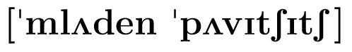
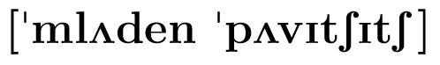

WELCOME TO THE PAGE OF MLADEN PAVICIC
Mladen Pavičić
 

"a" is pronounced as "u" in "but," "e" as "e" in "get,"
"i" as "i" in "rid," and both accented "c"s as "ch" in "church"
Founding Member of the Photonics and Quantum Optics,
a Research Unit of the
Center of Excellence for Advanced Materials and Sensors - CEMS
based at the
Ruđer Bošković Institute, Zagreb, Croatia.
CEMS Center of Excellence was proclaimed by the Minister of
Science, Education and Sports on Nov 10, 2014.
Tenured Full Professor
from the University of
Zagreb.
Snail mail address: Croatian Humboldt-Club, POB 412, 10001 Zagreb, Croatia;
Email: mpavicic at irb dot hr
New book:
Mladen Pavicic, COMPANION TO QUANTUM COMPUTATION AND COMMUNICATION, Wiley-VCH, Weinheim (2013)
News on the book (in Croatian):
1 ,
2
Head of the research project
QUANTUM COMPUTATION: PARALLELISM AND VISUALIZATION (2007-2014)
(082-0982562-3160)
at the Ministry of Science
and Technology of Croatia
Coworker at the research project
EXPERIMENTAL TECHNIQUES OF QUANTUM COMMUNICATION AND QUANTUM INFORMATION
(2007-2014)
(098-0352851-2873)
at the Ministry of Science
and Technology of Croatia
Head of the former research project
QUANTUM INFORMATION THEORY (2002-06)
at the Ministry of Science
and Technology of Croatia
Head of the former research project
Quantum Computation and Quantum Communications (1996-2002) at the
Ministry of Science
in Croatian and the
complete text of the Project Proposal in English .
Head of the former research project
ALGEBRAICO-PROBABILISTIC STRUCTURES OF QUANTUM
MECHANICS (1990-1995) at the Ministry of Science (in English)
with a
list of references and abstracts in English.
Former Chairman of the
Humboldt-Club of Croatia (2001-05)
ERDOS NUMBER: 2
On The Erdos Number Project
Recent book:
Mladen Pavicic, QUANTUM COMPUTATION AND QUANTUM COMMUNICATION:
Theory and Experiments, Springer, New York (2005)
Scientific Interests
- QUANTUM OPTICS
- QUANTUM COMPUTATION
- QUANTUM COMMUNICATION
- QUANTUM CONTEXTUALITY